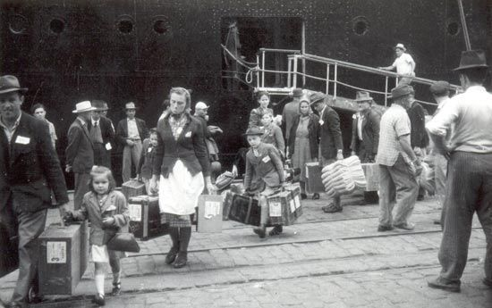
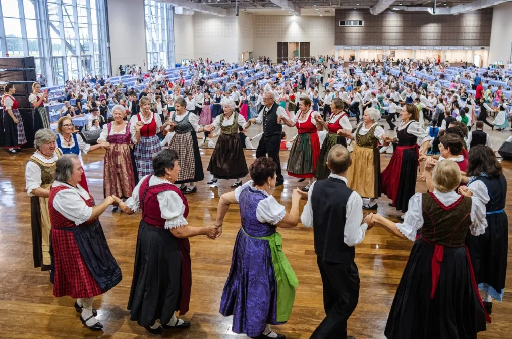
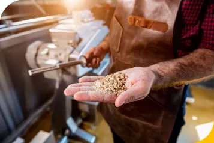
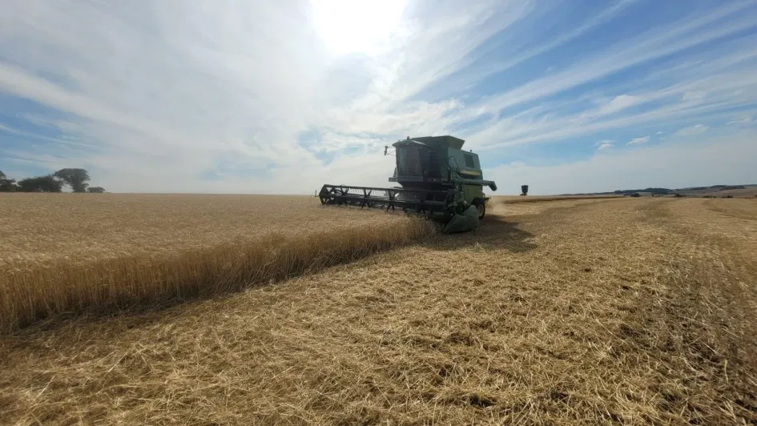

1951 — presente
Uma jornada de
raízes e colheitas
Da Europa devastada pela guerra às férteis terras do Paraná – a saga dos Suábios do Danúbio.
Os Suábios
do Danúbio
Os Suábios do Danúbio eram descendentes de colonizadores alemães que, no século XVIII, se estabeleceram nas margens do rio Danúbio, no sudeste da Europa — especialmente na antiga Iugoslávia, Hungria e Romênia. Eram agricultores habilidosos e organizados, conhecidos por transformar terras inóspitas em campos altamente produtivos ao longo de gerações.
Com o fim da Segunda Guerra Mundial, esses povos foram expulsos de suas terras pelo avanço dos regimes comunistas no leste europeu. Milhares de famílias passaram anos vivendo em campos de refugiados na Áustria, sem perspectiva de retornar. Em busca de um novo começo, grupos de imigrantes começaram a procurar países com terras férteis e condições para reconstruir suas vidas.
Foi nesse contexto que o governo brasileiro, em parceria com a "Ajuda Suíça para a Europa", negociou a vinda dessas famílias para o Paraná. O engenheiro agrônomo Michael Moor liderou a seleção das famílias e a escolha das terras em Guarapuava, tornando-se o primeiro presidente da Cooperativa Agrária.

A história do
distrito de Entre Rios
O distrito de Entre Rios, localizado no município de Guarapuava, possui uma história marcada pela imigração, pelo desenvolvimento agrícola e pela preservação cultural. Sua origem está diretamente ligada à chegada dos chamados Suábios do Danúbio — um povo de origem germânica que veio para o Brasil após a Segunda Guerra Mundial.
Em 1951, cerca de 500 famílias chegaram à região de Guarapuava e fundaram as cinco colônias que formam o distrito: Vitória, Cachoeira, Jordãozinho, Samambaia e Socorro. Os imigrantes trouxeram consigo conhecimentos avançados de agricultura, forte organização cooperativista e ricas tradições culturais europeias que preservam até hoje.
Nos primeiros anos, os colonizadores enfrentaram diversas dificuldades: problemas climáticos, perdas de safra, falta de infraestrutura e barreiras no idioma. Mesmo assim, com muito trabalho e espírito de cooperação, conseguiram transformar a região em um dos mais importantes polos agrícolas do Paraná. A fundação da Cooperativa Agrária Agroindustrial foi essencial para esse desenvolvimento econômico e social.
Ao longo das décadas, Entre Rios tornou-se referência nacional na produção de grãos, malte e outros produtos agrícolas. Além da economia forte, o distrito preserva até hoje muitos costumes suábios: a culinária típica, as festas tradicionais, a arquitetura enxaimel, os museus e o idioma alemão, ainda presente em parte da comunidade.
Oficialmente, o distrito de Entre Rios foi criado em 27 de junho de 1962, pela lei estadual nº 4.583. Atualmente, é considerado um dos maiores distritos do Brasil e um importante símbolo da imigração europeia no Paraná — unindo tradição cultural e desenvolvimento agrícola de forma única e inspiradora.

Cultura viva:
tradição preservada
Mesmo a milhares de quilômetros da Europa, os suábios de Entre Rios mantiveram vivas suas tradições ao longo de gerações. A língua alemã ainda é falada nas casas das gerações mais antigas, e músicas, danças e rezas seguem presentes no cotidiano das colônias.
As festas populares, como o Erntedankfest (Festa da Colheita) e o Heimatfest (Festa da Pátria), reúnem milhares de visitantes todos os anos, celebrando a música, a dança, a gastronomia e o artesanato típicos. A arquitetura enxaimel ainda marca a paisagem das colônias, e a culinária preserva receitas centenárias passadas de geração em geração.
O Museu da Imigração Suábio-Brasileira, localizado na Colônia Vitória, é o principal guardião dessa memória. Com um acervo de fotografias, documentos originais, utensílios domésticos, roupas típicas e ferramentas agrícolas trazidas da Europa, o museu reconstrói a trajetória dos primeiros colonizadores — da fuga da guerra à construção de uma nova pátria no Paraná.
"O museu não guarda apenas objetos. Ele guarda histórias, lágrimas e a coragem de um povo que recomeçou do zero em terras desconhecidas."
— Fundação Cultural Suábio-Brasileira (FCSB), Colônia VitóriaVisitantes de todo o Brasil e da Europa percorrem o museu em busca de suas próprias raízes. Para as novas gerações nascidas em Entre Rios, o espaço funciona como um elo entre o presente e a memória de seus avós — garantindo que a identidade suábia não se perca com o tempo.
"Quando entrei no museu e vi a mala de couro do meu avô, entendi por que ele nunca falava muito sobre o passado. Era dor demais para colocar em palavras."
— Depoimento de descendente suábio, registrado pela FCSBEm 2001, a Fundação Cultural Suábio-Brasileira (FCSB), sediada na Colônia Vitória, passou a coordenar oficialmente a preservação desse patrimônio imaterial — organizando festivais, apoiando grupos folclóricos, mantendo os museus e documentando a memória oral dos primeiros colonizadores.
A AGRÁRIA:
força coletiva
Fundada antes mesmo das primeiras casas serem construídas, a Cooperativa Agrária Agroindustrial é o coração econômico de Entre Rios. Nasceu da necessidade: imigrantes sem capital individual precisavam de força coletiva para comprar insumos, escoar a produção e investir em infraestrutura. Esse espírito cooperativista, trazido da Europa, foi o alicerce do desenvolvimento da região.
Hoje, a AGRÁRIA integra toda a cadeia produtiva: da pesquisa genética realizada pela FAPA (Fundação Agrária de Pesquisa Agropecuária) à industrialização do malte na Agrária Malte, em Grandes Rios (PR) — a maior maltaria da América Latina, responsável por cerca de 30% do malte consumido pelas cervejarias brasileiras. A cooperativa também opera moinhos de trigo, armazéns e uma rede completa de assistência técnica para seus associados.
O modelo cooperativista garantiu que a renda permanecesse na própria comunidade, financiando escolas, postos de saúde, estradas e projetos sociais dentro das colônias — transformando Entre Rios num exemplo nacional de desenvolvimento comunitário autossustentável com forte identidade cultural.


Impacto nacional
e legado para o futuro
O legado técnico de Entre Rios vai muito além de suas fronteiras. O plantio direto, desenvolvido e aperfeiçoado pelos agricultores da AGRÁRIA na década de 1970, tornou-se a base da agricultura moderna brasileira: hoje está presente em mais de 35 milhões de hectares no país, sendo considerada uma das maiores inovações agronômicas do século XX.
Entre Rios contribuiu diretamente para posicionar o Brasil como um dos maiores produtores mundiais de soja e trigo. A região de Guarapuava, impulsionada pela presença da cooperativa e pelos investimentos em pesquisa da FAPA, tornou-se referência em produção de trigo no Paraná — estado responsável por mais de 50% da produção nacional do cereal.
Com mais de 9.000 habitantes distribuídos em cinco colônias e mais de 30% do território coberto por vegetação nativa — acima do exigido pelo Código Florestal Brasileiro —, Entre Rios demonstra que produzir alimentos em larga escala e preservar o meio ambiente não são objetivos opostos. Um modelo que o Brasil e o mundo precisam conhecer e replicar.